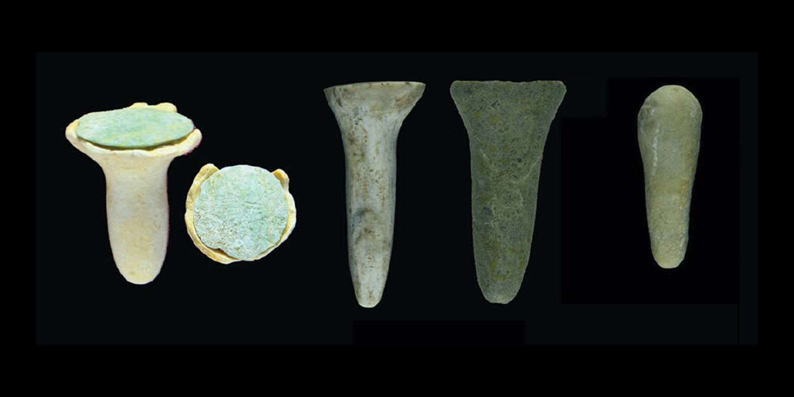
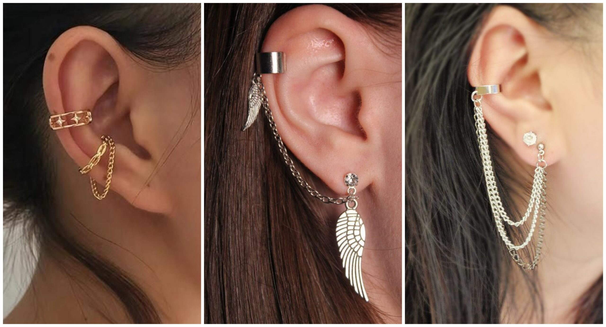

Prehistoria (30.000 a.C. - 3000 a.C.)
- Los primeros aretes se cree que fueron hechos de materiales naturales como conchas, huesos, piedras y madera.
- En la cueva de Lascaux, en Francia, se han encontrado aretes de piedra y hueso que datan de hace 30.000 años.
- En África, se han encontrado aretes de piedra y hueso que datan de hace 20.000 años.
Antigüedad (3000 a.C. - 500 d.C.)
- En Egipto, los aretes eran un símbolo de estatus social y poder. Los faraones y nobles utilizaban aretes de oro y joyas.
- En Grecia y Roma, los aretes eran populares entre las mujeres y se utilizaban para indicar la condición social
- En China, los aretes eran utilizados por la nobleza y se hacían de jade y otros materiales valiosos.
Edad Media (500 - 1500 d.C.)
- Durante la Edad Media, los aretes se consideraban un lujo y solo estaban al alcance de la nobleza.
- Los aretes se hacían de metal, generalmente de oro o plata, y se adornaban con piedras preciosas.
- En Europa, los aretes eran utilizados por la nobleza y la clergy.
Renacimiento (1500 - 1800 d.C.)
- Durante el Renacimiento, los aretes se volvieron más elaborados y se utilizaban para indicar la riqueza y el estatus social.
- Los aretes se hacían de oro, plata y otros metales, y se adornaban con piedras preciosas y perlas.
- En Italia, los aretes eran populares entre la nobleza y la classe alta.

Epoca Moderna (1800 - presente)
- En el siglo XIX, los aretes se popularizaron entre las mujeres de la clase media.
- En el siglo XX, los aretes se convirtieron en un accesorio de moda y se utilizaron para expresar la personalidad y el estilo.
- Hoy en día, los aretes se hacen de una variedad de materiales, incluyendo metal, plástico, madera y otros.